← Laufstrecken
Tschiertschen Parpan
Wegname:
Tschiertschen Parpan
Streckenart:
Laufstrecke
Kategorie:
Berglauf
Region:
GR Mitte
Streckenlänge:
19,5 Km
Hm +:
1600 hm
Hm -:
1500 hm
Datum:
11.09.21
Kurzbeschrieb:
Tschiertschen - Urden - Alpstein - Farurfurgga - Urdenfürggli - Scharmoin - Parpan
Link SchweizMobil:
Bild SchweizMobil:
Bericht:
Unser kleines Grüppli, Brigitte, Nöldi, Corina, Lädi, Iris und Petra trifft sich auf dem Postautodeck zur gemeinsamen Fahrt nach Tschiertschen. Zu unserer Überraschung steigt Christine beim Araschgarank dazu. Das Wetter ist ideal und wir freuen uns auf einen erlebnisreichen Traillauf.
Wir verlassen das Dorf Tschiertschen und folgen dem Urdenbach durchs Ruchtobel Richtung Innerurden. Wir laufen auf einer eher flachen Alpstrasse Richtung Urdenalp. Kurz vor der Alp zweigt rechts eine weitere Alpstrasse Richtung Alpstein ab. Nach dieser kurzen Alpstrasse führt der Wanderweg über eine Alpweide recht stotzig zum Alpstein (2297hm) hinauf. Hier wird uns die Sicht, die bei gutem Wetter den Blick nach Chur frei gibt, durch den aufsteigenden Nebel leider verwehrt. Da der Alpstein nur ein „Zusatzzückerli“ ist, laufen wir ein kleines Stück retour um den schönen aber technisch anspruchsvollen Weg im Gebiet Tschingla in Angriff zu nehmen. Super toller Weg benötigt Konzentration, ist aber nicht gefährlich. Wir erreichen die Farurfurgga (2545hm). Der Nebel hat sich verzogen und wir geniessen ein super Panorama. Wir laufen dem Gratweg entlang zum Urdenfürggli. Auch hier wunderbare Rundsicht und anspruchsvoller Trail, schwierige Stellen sind durch ein Seil gesichert. Viele Edelweisse säumen den Weg. Vom Urdenfürggli folgen wir dem Wanderweg nach Parpan/Scharmoin und geniessen in der Mottahütte feine Cremeschnitten. Gestärkt nehmen wir die letzten 700 hm unter die Füsse. Wir sind uns alle einig, es war eine super gute Streckenauswahl von Brigitte.
Autor:
Petra
Teilnehmer:
Brigitte, Nöldi, Corina, Lädi, Iris, Christina, Silvia mit Enya, Petra
Galerie:
-
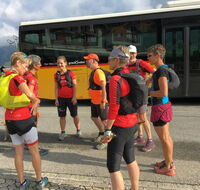
-
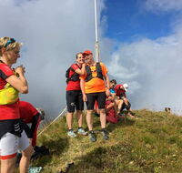
-
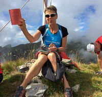
-
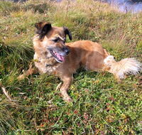
-
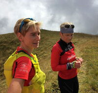
-
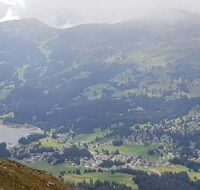
-
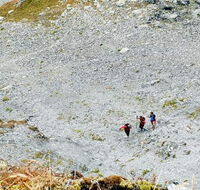
-
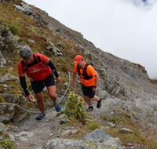
-
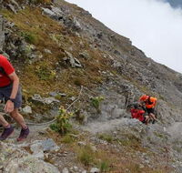
-
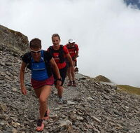
-
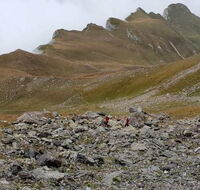
-
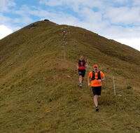
-
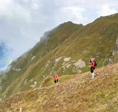
-
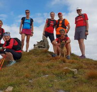
-
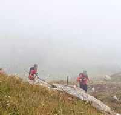
-
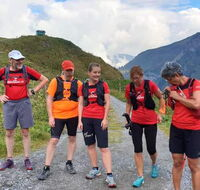
-
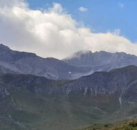
-
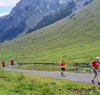
-
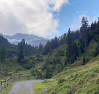
-
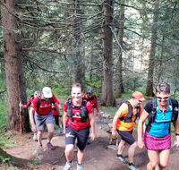
-
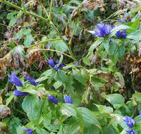
-
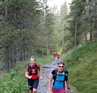
-
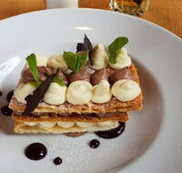